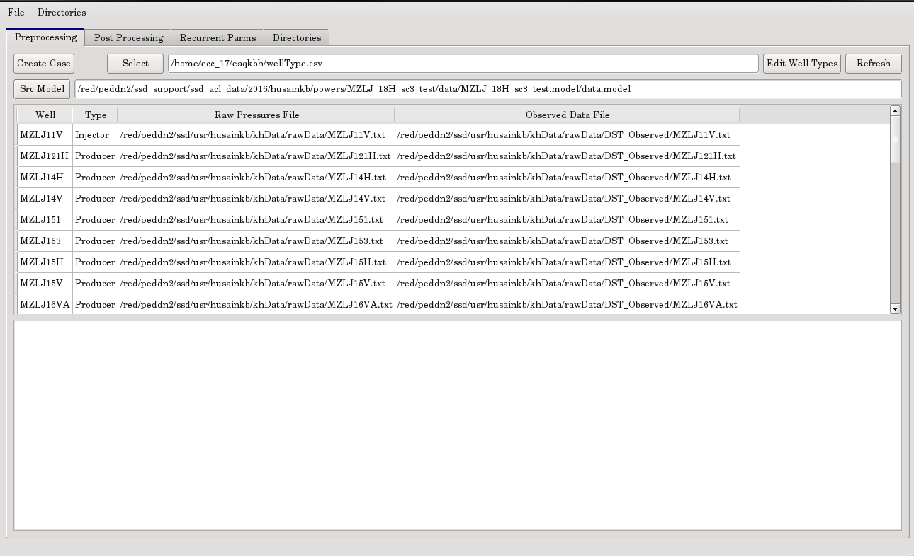

Your browser doesn't support the features required by impress.js, so you are presented with a simplified version of this presentation.
For the best experience please use the latest Chrome, Safari or Firefox browser.
Optimized
KH
Conditioning
Description
Develop a software tool for ranking multiple geological model realizations with robust KH values along the well bore.
This tool creates multiple scenarios for different values of KH, creates the necessary GIGA POWERS models for each run and the allows the user to compare and rank resulting simulation values when compared with actual field data.
The first version of the software is already available for the users.
Members
- Kayode Babatope
- Kamran Husain
- Santiago Gannis
Phase 1
- Phase 1 is complete and implemented
A base model file to use for each well
Pressure Data File(s) for each well
Output Directory for analysis
Phase 2
- Phase 2 is complete and implemented
Directory to extract Simulated Results in
Simulation Pressure Data over time
Compare Simulator Output with Actual Data
By using a base model, then permutating it to create and run multiple models to find the best solution

Phase 3
- Phase 3 has yet to be determined
Automatic selection of best solution for one well
Automatic selection of wells for a given project